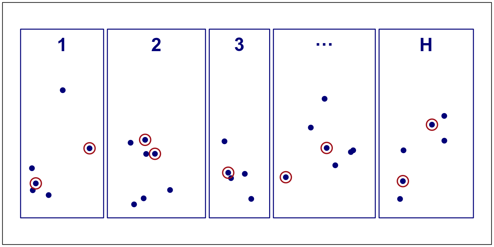
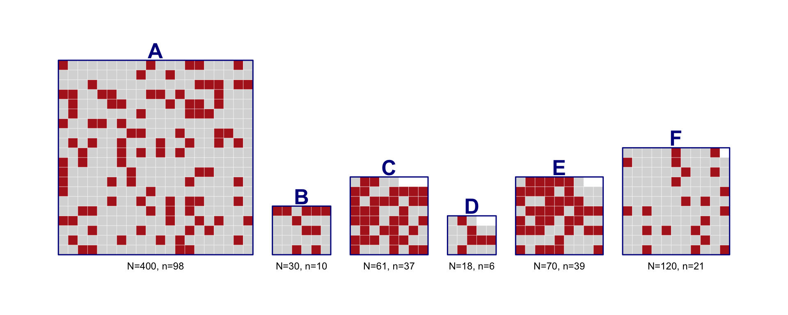
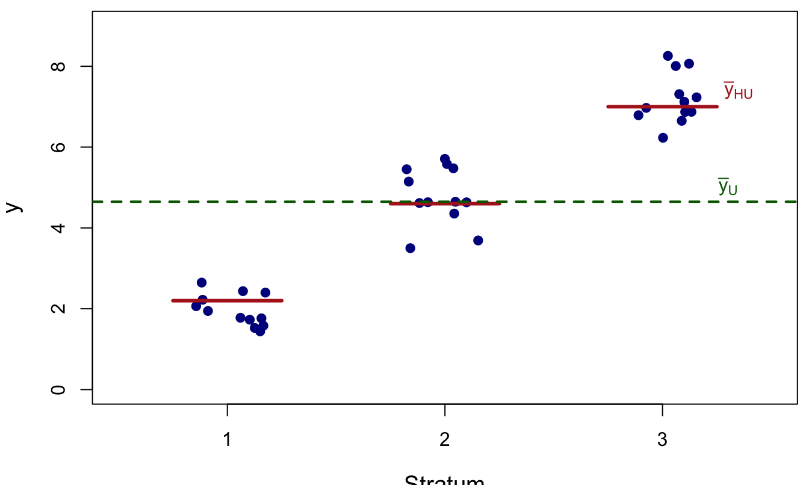
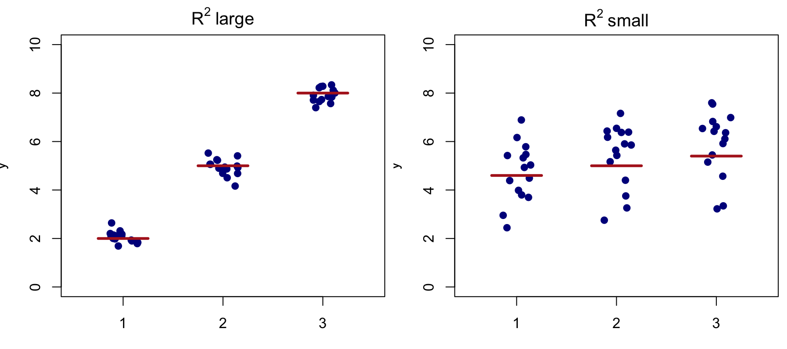
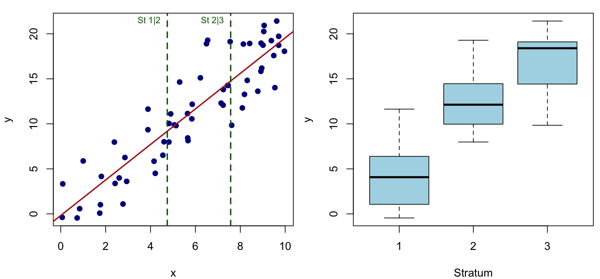

Stratified Random Sampling
Textbook sections:
3.1–3.5 in Lohr
5.1–5.9 in Scheaffer et al.
If the variable we are interested in takes on different mean values in different subpopulations, we may be able to obtain more precise estimates of population quantities by taking a stratified random sample. The word stratify comes from Latin words meaning “to make layers”; we divide the population into H subpopulations, called strata. The strata do not overlap, and they constitute the whole population, so that each sampling unit belongs to exactly one stratum.
We draw an independent probability sample from each stratum, then pool the information to obtain overall population estimates.

Figure 1
Each stratum h has N_h units in the population; we sample n_h of them (circled). H is the number of strata.
We use the four U.S. census regions as strata. The SRS in an earlier example sampled about 10% of all 3078 counties; to compare stratified sampling with SRS directly, we also sample about 10% of the counties in each stratum:
| Stratum | Counties in Stratum | Counties in Sample |
|---|---|---|
| Northeast | 220 | 21 |
| North Central | 1054 | 103 |
| South | 1382 | 135 |
| West | 422 | 41 |
| Total | 3078 | 300 |
We select four separate, independent SRSs, one per stratum. Knowing which counties are in the sample from the Northeast tells us nothing about which counties are in the sample from the South.
Summary statistics for acres92 in each stratum (data file agstrat.dat):
| Region (h) | Sample Size (n_h) | Average (\overline y_h) | Variance (s_h^2) |
|---|---|---|---|
| Northeast | 21 | 97,629.8 | 7,647,472,708 |
| North Central | 103 | 300,504.2 | 29,618,183,543 |
| South | 135 | 211,315.0 | 53,587,487,856 |
| West | 41 | 662,295.5 | 396,185,950,266 |
For unit j in stratum h, let y_{hj} denote its value, and let \pi_h = \frac{N_h}{N}, denote the proportion of population units belonging to stratum h (so \sum_{h=1}^H \pi_h = 1). Then, t_h = \sum_{j=1}^{N_h} y_{hj} \quad(\text{stratum total}) \qquad t = \sum_{h=1}^H t_h \quad(\text{population total}) \overline y_{hU} = \frac{\sum_{j=1}^{N_h} y_{hj}}{N_h} \quad(\text{stratum mean}) \qquad \overline y_U = \frac tN = \sum_{h=1}^H \pi_h\, \overline y_{hU} \quad(\text{overall mean}) S_h^2 = \frac{1}{N_h-1}\sum_{j=1}^{N_h}(y_{hj}-\overline y_{hU})^2 \quad(\text{stratum variance}).
Since an SRS is taken within each stratum, we estimate the stratum quantities using ordinary SRS formulas, applied separately to each stratum: \overline y_h = \frac{1}{n_h}\sum_{j\in\mathcal S_h} y_{hj} \qquad \hat t_h = \frac{N_h}{n_h}\sum_{j\in\mathcal S_h} y_{hj} = N_h \overline y_h s_h^2 = \sum_{j\in\mathcal S_h} \frac{(y_{hj}-\overline y_h)^2}{n_h - 1}.
\hat t_{\text{str}} = \sum_{h=1}^H \hat t_h = \sum_{h=1}^H N_h \overline y_h \overline y_{\text{str}} = \frac{\hat t_{\text{str}}}{N} = \sum_{h=1}^H \pi_h\overline y_h
\overline y_{\text{str}} is a weighted average of the sample stratum averages, with \overline y_h weighted by \pi_h = N_h/N, the fraction of population units in stratum h. To use stratified sampling, the population sizes of the strata must be known.
Since we sample independently across strata, variances add: V(\hat t_{\text{str}}) = \sum_{h=1}^H V(\hat t_h) = \sum_{h=1}^H \Big(1-\frac{n_h}{N_h}\Big)N_h^2\frac{S_h^2}{n_h}.
Substituting sample variances s_h^2 for S_h^2 gives unbiased estimators: \hat V(\hat t_{\text{str}}) = \sum_{h=1}^H \Big(1-\frac{n_h}{N_h}\Big)N_h^2\frac{s_h^2}{n_h} \hat V(\overline y_{\text{str}}) = \frac{1}{N^2}\hat V(\hat t_{\text{str}}) = \sum_{h=1}^H \Big(1-\frac{n_h}{N_h}\Big)\pi_h^2\frac{s_h^2}{n_h}.
Note we need at least two sampled units per stratum to estimate the variances.
E\left[\sum_{h=1}^H \frac{N_h}{N}\overline y_h\right] = \sum_{h=1}^H \frac{N_h}{N}E[\overline y_h] = \sum_{h=1}^H \frac{N_h}{N}\overline y_{hU} = \sum_{h=1}^H \frac{N_h}{N}\cdot \frac{\sum_{j=1}^{N_h} y_{hj}}{N_h} = \sum_{h=1}^H \frac{\sum_{j=1}^{N_h}y_{hj}}{N} = \overline y_U.
Since an SRS is taken in each stratum, E[\overline y_h]=\overline y_{hU}; averaging these unbiased stratum estimates with weights N_h/N keeps the overall estimate unbiased.
If either (1) the sample sizes within each stratum are large, or (2) the sampling design has a large number of strata, an approximate 100(1-\alpha)\% CI for \overline y_U is \overline y_{\text{str}} \pm z_{\alpha/2}\,\text{SE}(\overline y_{\text{str}}).
When n is not large, it is common to use the quantile of a t distribution with n-H degrees of freedom instead of the normal quantile: \hat t_{\text{str}} \pm t_{\alpha/2,\,n-H}\cdot \text{SE}(\hat t_{\text{str}}).
Siniff and Skoog (1964) used stratified random sampling to estimate the size of the Nelchina herd of Alaska caribou in February 1962. Preliminary caribou density estimates were used to divide the area of interest into six strata; each stratum was divided into a grid of 4-mi^2 sampling units. Stratum A, for example, contained N_1=400 sampling units, of which n_1=98 were randomly selected for the survey.

Figure 2
Each grid represents one stratum’s N_h sampling units; the highlighted (red) cells are the n_h units randomly selected in that stratum.
Here \pi_h = N_h/N with N=699, and the last two columns give each stratum’s contribution to \overline y_{\text{str}}=\sum_h \pi_h\overline y_h and to \hat V(\overline y_{\text{str}}) = \sum_h\big(1-\tfrac{n_h}{N_h}\big)\pi_h^2\tfrac{s_h^2}{n_h}:
| Stratum | N_h | n_h | \pi_h=N_h/N | \overline y_h | s_h^2 | \pi_h\overline y_h | \hat v_h1 |
|---|---|---|---|---|---|---|---|
| A | 400 | 98 | 0.5722 | 24.1 | 5,575 | 13.7911 | 14.0648 |
| B | 30 | 10 | 0.0429 | 25.6 | 4,064 | 1.0987 | 0.4991 |
| C | 61 | 37 | 0.0873 | 267.6 | 347,556 | 23.3528 | 28.1455 |
| D | 18 | 6 | 0.0258 | 179.0 | 22,798 | 4.6094 | 1.6798 |
| E | 70 | 39 | 0.1001 | 293.7 | 123,578 | 29.4120 | 14.0728 |
| F | 120 | 21 | 0.1717 | 33.2 | 9,795 | 5.6996 | 11.3409 |
| Total | 699 | 211 | 1.0000 | 77.9636 | 69.8029 |
The estimated mean number of caribou per sampling unit is \overline y_{\text{str}} = 77.96, \text{SE}(\overline y_{\text{str}}) = \sqrt{69.8029} = 8.35.
The estimated total number of caribou: \hat t_{\text{str}} = N\overline y_{\text{str}} = 699(77.96) = 54{,}497, \text{SE}(\hat t_{\text{str}}) = N\cdot\text{SE}(\overline y_{\text{str}}) = 699(8.35) = 5{,}840.
An approximate 95% CI for the total number of caribou: 54{,}497 \pm 1.96(5840) = [43{,}051,\ 65{,}943].
This CI reflects only sampling error; if the field procedure for counting caribou tends to miss animals, the entire CI will be biased low.
Using the same census-region strata for acres92:
| Stratum | Estimated Total of Farm Acres | Estimated Variance of Total |
|---|---|---|
| Northeast | 21,478,558.2 | 1.5943\times10^{13} |
| North Central | 316,731,379.4 | 2.8823\times10^{14} |
| South | 292,037,390.8 | 6.8408\times10^{14} |
| West | 279,488,706.1 | 1.5537\times10^{15} |
| Total | 909,736,034.4 | 2.5419\times10^{15} |
Since sampling was independent across strata, the variance of the U.S. total is the sum of the four stratum variances.
\hat t_{\text{str}} = 909{,}736{,}034, \qquad \text{SE}(\hat t_{\text{str}}) = \sqrt{2.5419\times10^{15}} = 50{,}417{,}248.
The average number of acres devoted to farming per county: \overline y_{\text{str}} = \frac{909{,}736{,}034}{3078} = 295{,}560.76, \qquad \text{SE}(\overline y_{\text{str}}) = \frac{50{,}417{,}248}{3078} = 16{,}379.87.
Only the West had sample variance larger than the overall SRS sample variance; the sample variance in the Northeast was much smaller than the population as a whole. Observations within many strata tend to be more homogeneous than observations in the population overall.
The relative gain from stratification can be estimated by the ratio \frac{\text{estimated variance from stratified sample},\ n=300}{\text{estimated variance from SRS},\ n=300} = \frac{2.5419\times10^{15}}{3.3837\times10^{15}} = 0.75.
Percentage of variance reduction = 1-0.75 = 0.25. If these were the population variances, we would need only (300)(0.75)=225 observations with a stratified sample to match the precision of an SRS of 300.
A proportion is the mean of a 0/1 variable, so we apply the same formulas with \overline y_h = \hat p_h and s_h^2 = \frac{n_h}{n_h-1}\hat p_h(1-\hat p_h): \hat p_{\text{str}} = \sum_{h=1}^H \frac{N_h}{N}\hat p_h \hat V(\hat p_{\text{str}}) = \sum_{h=1}^H \Big(1-\frac{n_h}{N_h}\Big)\Big(\frac{N_h}{N}\Big)^2\frac{\hat p_h(1-\hat p_h)}{n_h-1}.
The American Council of Learned Societies (ACLS) used a stratified random sample of member societies in seven disciplines to study publication patterns and computer/library use (Morton and Price, 1989).
| Discipline | Membership (N_h) | Valid Returns (n_h) | Female Members (%) |
|---|---|---|---|
| Literature | 9,100 | 636 | 38 |
| Classics | 1,950 | 451 | 27 |
| Philosophy | 5,500 | 481 | 18 |
| History | 10,850 | 611 | 19 |
| Linguistics | 2,100 | 493 | 36 |
| Political Science | 5,500 | 575 | 13 |
| Sociology | 9,000 | 588 | 26 |
| Totals | 44,000 | 3,835 |
Here \pi_h = N_h/N with N=44{,}000, and the last two columns give each stratum’s contribution to \hat p_{\text{str}}=\sum_h \pi_h\hat p_h and to \hat V(\hat p_{\text{str}})=\sum_h\big(1-\tfrac{n_h}{N_h}\big)\pi_h^2\tfrac{\hat p_h(1-\hat p_h)}{n_h-1}:
| Discipline | N_h | n_h | \pi_h=N_h/N | \hat p_h | \pi_h\hat p_h | \hat v_h (\times10^{-5})1 |
|---|---|---|---|---|---|---|
| Literature | 9,100 | 636 | 0.2068 | 0.38 | 0.0786 | 1.476 |
| Classics | 1,950 | 451 | 0.0443 | 0.27 | 0.0120 | 0.066 |
| Philosophy | 5,500 | 481 | 0.1250 | 0.18 | 0.0225 | 0.439 |
| History | 10,850 | 611 | 0.2466 | 0.19 | 0.0469 | 1.448 |
| Linguistics | 2,100 | 493 | 0.0477 | 0.36 | 0.0172 | 0.082 |
| Political Science | 5,500 | 575 | 0.1250 | 0.13 | 0.0163 | 0.276 |
| Sociology | 9,000 | 588 | 0.2045 | 0.26 | 0.0532 | 1.282 |
| Total | 44,000 | 3,835 | 1.0000 | 0.2465 | 5.068 |
Let N_h be the membership figures and n_h the number of valid surveys. Ignoring nonresponse for now, and estimating the proportion of these scholars who are female: \hat p_{\text{str}} = \sum_{h=1}^7 \frac{N_h}{N}\hat p_h = \frac{9100}{44{,}000}(0.38) + \cdots + \frac{9000}{44{,}000}(0.26) = 0.2465 \text{SE}(\hat p_{\text{str}}) = \sqrt{\sum_{h=1}^7 \Big(1-\frac{n_h}{N_h}\Big)\Big(\frac{N_h}{N}\Big)^2\frac{\hat p_h(1-\hat p_h)}{n_h-1}} = 0.0071.
To estimate the total number of female scholars, multiply N=44{,}000 by these two numbers.
In contrast, if we had taken an SRS of size n=n_1+\cdots+n_H from the whole population, the sample mean would be \overline y_{\text{SRS}} = \frac{\sum_{(h,j)\in\mathcal S} y_{hj}}{n} = \frac{\overline y_1 n_1 + \cdots + \overline y_H n_H}{n} = \overline y_1\frac{n_1}{n} + \cdots + \overline y_H\frac{n_H}{n},
compared with the stratified estimator \overline y_{\text{str}} = \overline y_1\frac{N_1}{N} + \cdots + \overline y_H\frac{N_H}{N}.
Similarly, for proportions: \hat p_{\text{SRS}} = \sum_{h=1}^H \frac{n_h}{n}\hat p_h = \sum_{h=1}^H \frac{n_h \hat p_h}{n}.
The key difference: \overline y_{\text{SRS}} weights each stratum’s sample mean by its realized sample fraction n_h/n, which may be influenced by sampling variation and by non-response rates. \overline y_{\text{str}} instead uses the known, fixed population fraction N_h/N for each stratum, which is what guarantees unbiasedness for \overline y_U.
Write the overall stratified sample as \mathcal S = (\mathcal S_1,\ldots,\mathcal S_H), where \mathcal S_h is the SRS drawn from stratum h. Since the strata are sampled independently, P(\mathcal S) = P(\mathcal S_1)\times P(\mathcal S_2)\times\cdots\times P(\mathcal S_H) = \frac{1}{\binom{N_1}{n_1}}\cdot\frac{1}{\binom{N_2}{n_2}}\cdots\frac{1}{\binom{N_H}{n_H}}.
We introduced the sampling weight w_i = 1/\pi_i for SRS. For unit j in stratum h, the inclusion probability is \pi_{hj} = n_h/N_h (the sampling fraction in stratum h), so the sampling weight is, w_{hj} = \frac{1}{\pi_{hj}} = \frac{N_h}{n_h}.
Stratified sampling is an example of unequal-probability sampling.
The population total can then be written as a weighted sum over all sampled units, regardless of stratum: \hat t_{\text{str}} = \sum_{h=1}^H N_h \overline y_h = \sum_{h=1}^H \sum_{j\in\mathcal S_h} w_{hj}\, y_{hj}.
The sampling weight can be thought of as the number of population units represented by the sampled unit.
The weights sum to the population size: \sum_{h=1}^H\sum_{j\in\mathcal S_h} w_{hj} = N_1+N_2+\cdots+N_H = N,
so the population mean can also be written \overline y_{\text{str}} = \frac{\displaystyle\sum_{h=1}^H\sum_{j\in\mathcal S_h} w_{hj}y_{hj}}{\displaystyle\sum_{h=1}^H\sum_{j\in\mathcal S_h} w_{hj}}.
| Stratum | N_h | n_h | w_{hj} = N_h/n_h |
|---|---|---|---|
| A | 400 | 98 | 4.08 |
| B | 30 | 10 | 3.00 |
| C | 61 | 37 | 1.65 |
| D | 18 | 6 | 3.00 |
| E | 70 | 39 | 1.79 |
| F | 120 | 21 | 5.71 |
Note that using only the weights w_{hj} and sample sizes n_h is not enough to estimate variances — that requires computing s_h^2 separately within each stratum, since the weights alone don’t identify stratum membership.
A special case, useful for comparing with SRS: proportional allocation takes the same sampling fraction in every stratum, \frac{n_h}{N_h} = \frac nN \quad \text{for all } h.
This is not an optimal allocation in general, but it is a convenient benchmark.
| Source | df | Sum of Squares |
|---|---|---|
| Between strata | H-1 | \text{SSB} = \sum_{h=1}^H N_h(\overline y_{hU}-\overline y_U)^2 |
| Within strata | N-H | \text{SSW} = \sum_{h=1}^H (N_h-1)S_h^2 |
| Total, about \overline y_U | N-1 | \text{SSTO} = (N-1)S^2 |
\text{SSTO} = \text{SSB} + \text{SSW}.

Figure 3
Red segments show stratum means (SSW is variability around these); the green dashed line is the overall mean (SSB is variability of the stratum means around it).
For a stratified sample of size n with proportional allocation, V_{\text{prop}}(\hat t_{\text{str}}) = \sum_{h=1}^H \Big(1-\frac nN\Big)\frac Nn\, N_h S_h^2 = \Big(1-\frac nN\Big)\frac Nn\left(\text{SSW} + \sum_{h=1}^H S_h^2\right).
Since \text{SSTO}=\text{SSW}+\text{SSB}, the variance of the total from an SRS of size n is. V_{\text{SRS}}(\hat t) = \Big(1-\frac nN\Big)\frac{N^2 S^2}{n} = \Big(1-\frac nN\Big)\frac{N^2}{n(N-1)}(\text{SSW}+\text{SSB}).
Comparing the two expressions, proportional allocation gives smaller variance than SRS whenever \text{SSB} > \sum_{h=1}^H \Big(1-\frac{N_h}{N}\Big)S_h^2.
This typically holds because SSB is a sum of N squared deviations, while \sum_h S_h^2 is a sum of only H (typically much fewer) terms.
\frac{V_{\text{prop}}(\hat t_{\text{str}})}{V(\hat t_{\text{SRS}})} \approx \frac{\text{SSW}+\sum_h S_h^2}{\text{SSW}+\text{SSB}} \approx \frac{\text{SSW}}{\text{SSW}+\text{SSB}} \text{percentage of variance reduction} = \frac{\text{SSB}}{\text{SSW}+\text{SSB}} = R^2_{y\mid\text{strata}},
the proportion of variance in y that can be explained by strata membership.
R^2 = 1-\frac{\text{SSW}}{\text{SST}} = \frac{\text{SSB}}{\text{SST}}
R^2 generalizes the squared Pearson correlation coefficient: it measures the correlation between a response y and one or more predictors x_1,\ldots,x_p — here, “stratum membership” plays the role of the predictor. R^2 is the proportion of the variance in y explained by the predictors.

Figure 4
When the strata means differ widely relative to the within-stratum spread (left), stratification explains a large share of the variance in y.
The objective in optimal allocation is to gain the most information for the least cost. Let C be total cost, c_0 overhead cost, and c_h the cost of sampling one unit in stratum h: C = c_0 + \sum_{h=1}^H c_h n_h, \qquad n = n_1+\cdots+n_H.
We want to allocate n_1,\ldots,n_H to minimize V(\overline y_{\text{str}}) for a fixed total cost C (or equivalently minimize C for fixed V).
Using the method of Lagrange multipliers, the optimal n_h is proportional to N_hS_h/\sqrt{c_h}: n_h = \left(\frac{N_hS_h/\sqrt{c_h}}{\sum_{l=1}^H N_lS_l/\sqrt{c_l}}\right)n \qquad\text{i.e.}\qquad n_h \propto \frac{N_hS_h}{\sqrt{c_h}}.
We sample more heavily within a stratum if: the stratum is a large part of the population (N_h large); the stratum is more variable (S_h large); or sampling in the stratum is cheap (c_h small).
Special cases: if c_1=\cdots=c_H, then n_h\propto N_hS_h (Neyman allocation); if additionally S_1=\cdots=S_H, then n_h\propto N_h (proportional allocation).
The investigators used rough estimates of caribou counts as a proxy for S_h, with total sample size n=225:
| Stratum | N_h | s_h | N_hs_h | n_h (Neyman) | Sample size used |
|---|---|---|---|---|---|
| A | 400 | 3,000 | 1,200,000 | 96.26 | 98 |
| B | 30 | 2,000 | 60,000 | 4.81 | 10 |
| C | 61 | 9,000 | 549,000 | 44.04 | 37 |
| D | 18 | 2,000 | 36,000 | 2.89 | 6 |
| E | 70 | 12,000 | 840,000 | 67.38 | 39 |
| F | 120 | 1,000 | 120,000 | 9.63 | 21 |
| Total | 699 | 2,805,000 | 225 | 211 |
They wanted the sampling fraction to be at least 1/3 in the smaller strata, so the Neyman values (column n_h) were used only as a guideline.
For estimating a proportion, S_h^2 = p_h(1-p_h). As a function of p, S^2(p)=p(1-p) is a quadratic maximized at p=1/2. So election regions (swing states) with p near 0.5 should be assigned relatively larger sample sizes, since they contribute the most variance per unit sampled.
Dollar stratification is common in accounting audits. Recorded book amounts stratify the population: stratum 1 might be all loans over $1 million, stratum 2 loans between $500,000 and $999,999, and so on down to loans under $10,000.
Optimal allocation is efficient here: S_h is much larger in strata with large loan amounts, so optimal allocation prescribes a higher sampling fraction for those strata. An error in a $3,000,000 loan is likely to contribute far more to the total audited discrepancy than an error in a $3,000 loan.
Stratification is most efficient when the stratum means differ widely, since then SSB is large and within-stratum variability is small. Ideally we would stratify directly by the values of y; since y is unknown before sampling, we instead look for an auxiliary variable x that is highly correlated with (or predictive of) y.

Figure 5
Cutting on x (left) produces strata with visibly different distributions of y (right) — exactly the goal of stratification.
To estimate total business expenditures on advertising, we would like businesses that spend the most on advertising in stratum 1, the next highest spenders in stratum 2, and so on. We might stratify by number of employees or size of business, and by type of product or service.
For farm income, we might use farm size as the stratifying variable, since we expect larger farms to have higher incomes.
Difficulty in implementation. We need to know the stratum sizes N_h (and, for optimal allocation, rough estimates of S_h) before sampling.
Multiple variables of interest. A single stratifying variable that works well for one y may not work well for another y measured in the same survey — a variable highly correlated with one outcome may be nearly uncorrelated with a different outcome of interest.